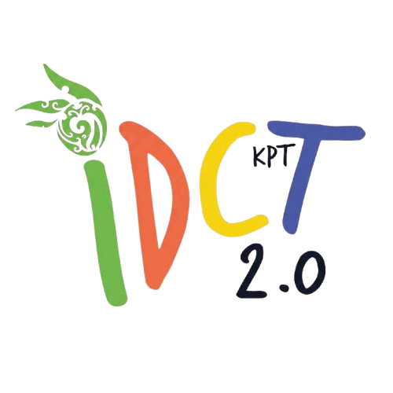



Exploring the Intersection of Sports Tourism and Community Empowerment
For generations, Chanang Hill stood in quiet reverence as known only to the people who walked its trails barefoot, who read the jungle like a language, and who never needed a website to know its worth.
Long before GPS coordinates or trail ratings, Chanang Hill was a sacred passage through the Crocker Range, navigated by the Dusun community of Bingkor village through oral tradition and inherited memory.
A group of local hikers carved three distinct trails through the dense landscape, where Trail A, Trail B, and Trail C were created entirely through community effort. The summit at 718 metres is no longer unreachable, it is an invitation for all to explore.
Today, Chanang Hill stands as one of Keningau's most promising eco-tourism assets. But the mountain alone wasn't enough. It needed a voice. It needed to be found.
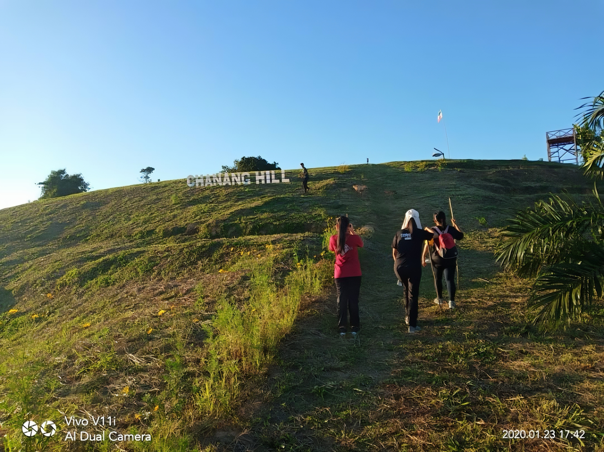
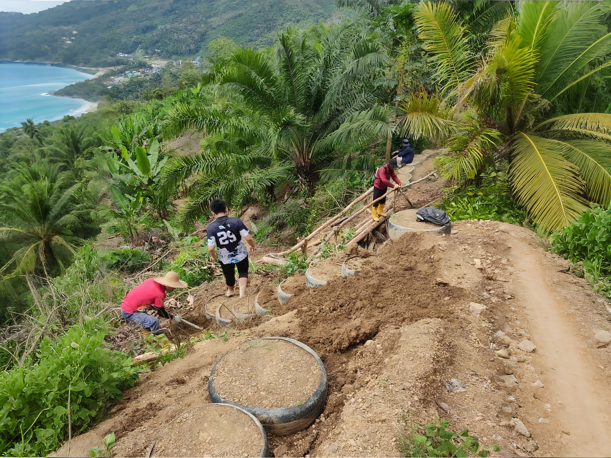
The lack of an official digital authority leaves the Chanang brand fragmented. This prevents the hill from reaching its full potential as a world-class tourism landmark.
Inefficient DM-based coordination creates a massive scaling bottleneck. This technical friction limits visitor volume and the potential spending power entering the Bingkor region.
Bingkor's local businesses and Takiding weavers remain digitally invisible. Without a platform, tourists "pass through" without a gateway to discover or support the local economy.
The absence of a data-managed system means environmental and community impact is unmonitored. This unmanaged growth threatens the long-term prosperity of the entire district.
Keningau, in Sabah's interior, sits on an untapped goldmine of tourism potential. While Chanang Hill is a natural masterpiece, its fragmented digital presence leads to Economic Leakage.
A famous hill without a unified platform means that while visitor numbers may grow, the financial profit fails to reach the surrounding Bingkor community. The challenge was to build a digital bridge that captures this value ensuring that the hill's fame directly fuels the prosperity of every local entrepreneur and artisan.
Beyond the digital interface lies the physical challenge of the Bornean highlands, offering a diverse trekking experience across Trail A, Trail B, and Trail C.
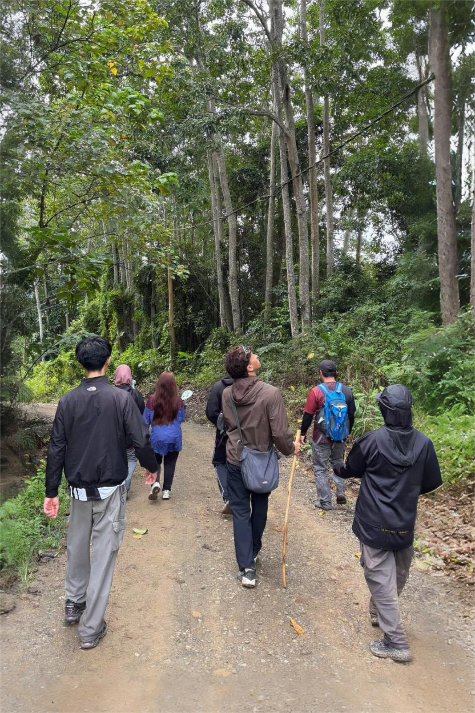
Most PopularThe main trail experience to the pristine peak of Chanang Hill. Challenge yourself through dense Bornean rainforest.
 Evening
Evening
Trek under low-light jungle conditions. Experience the entirely different nocturnal ecosystem of the Crocker Range.
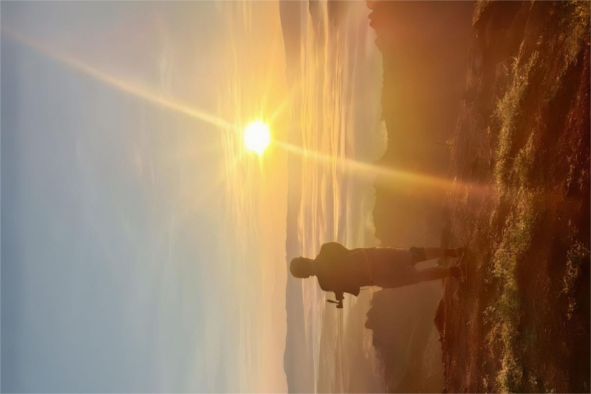
ScenicCatch early morning views from the top, or witness breathtaking golden hour scenery and silhouettes in the late afternoon.
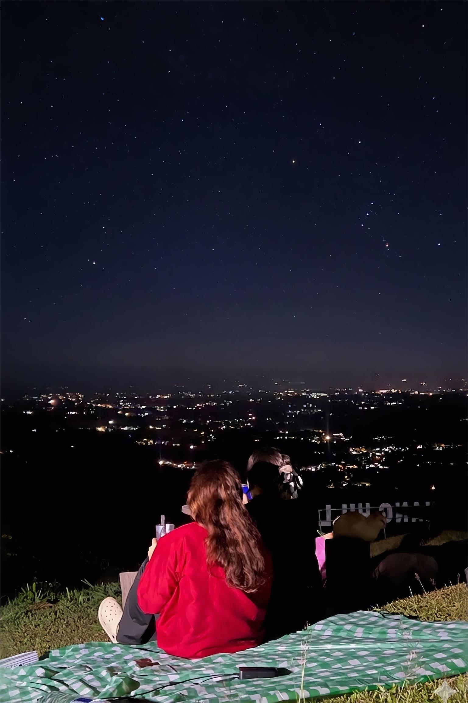
NightClear night sky observation from the peak, far away from city light pollution.
 Educational
Educational
Learn insider technical knowledge and survival insights from our highly experienced local hikers and guides.
Identify exotic jungle plants, fascinating insects, and the beautiful wildlife endemic exclusively to this region.
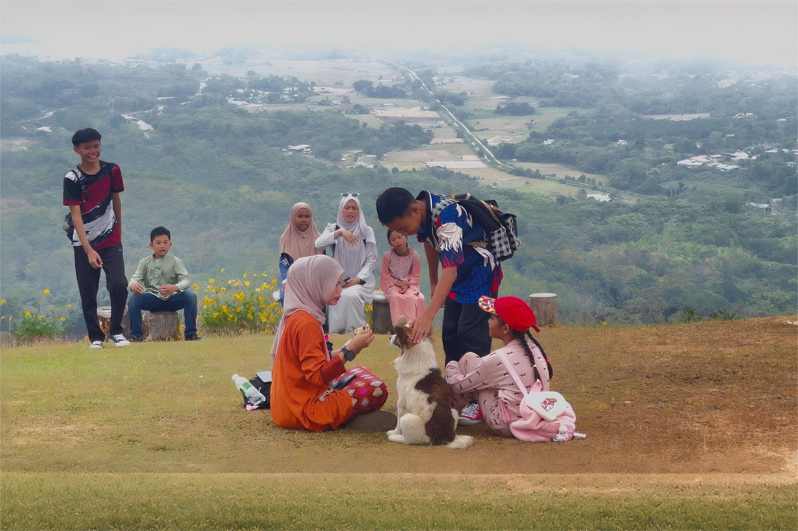
RelaxSet down a mat and enjoy a relaxing meal surrounded by the calm atmosphere of pristine nature.
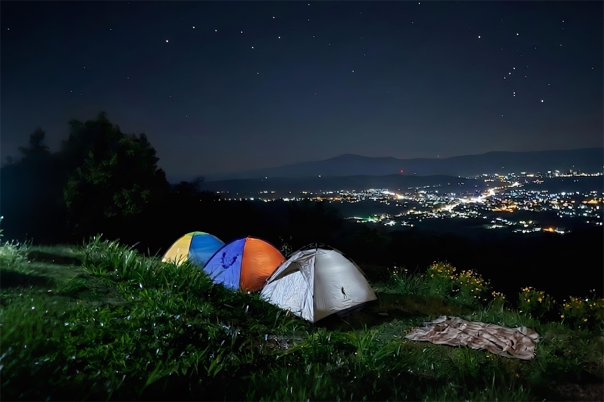
StayPitch a tent and sleep safely within the serene environment of the Chanang Hill camping grounds.
 Nature
Nature
Cool off near the river crossing, enjoy the natural waterfall streams, and reconnect with water nature.
"Leave nothing but footprint, take nothing but picture"
This hill has been part of our community for generations. Now, through this digital platform, the whole world can discover what makes Chanang Hill so special to us.
I hope those who visit Chanang Hill carry home a feeling of calm, a gentle longing, and a renewed sense of peace.
Everything you need to know for a seamless trekking experience at Chanang Hill.
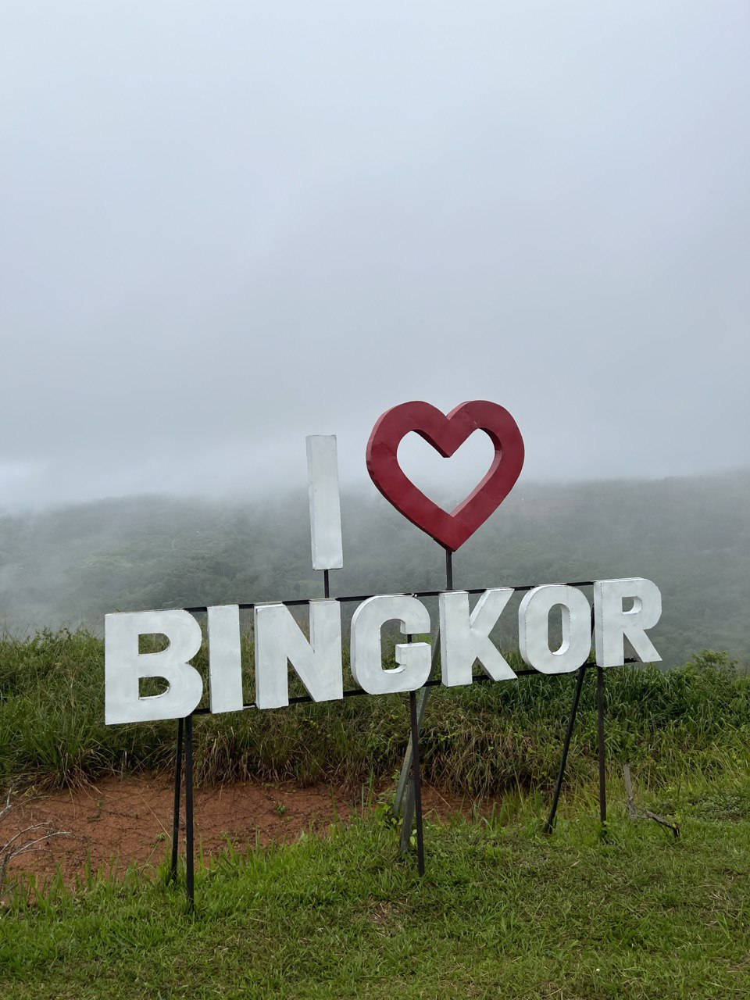
5.0 KM • Jungle Trail
3.5 KM • Jungle Trail
3.0 KM • Road Trail
We engineered more than just a website. We built a scalable digital ecosystem designed to sustain growth and streamline community operations.
Bringing a modernized digital experience to Chanang Hill with a comprehensive information hub, featuring real-time weather integration, high-resolution galleries, and essential visitor tools.
Explore the terrain with 3D elevation maps, featuring interactive waypoints and essential trail data to help you visualize every climb before you start.
An immersive virtual pre-hike experience featuring stunning panoramic photography of key checkpoints, allowing hikers to scout essential trail milestones before they arrive.
Intelligent visitor assistant
Streamlined reservation flow
Post-hike digital achievement
Complete management suite
Bridging the gap between traditional heritage and modern digital authority through purpose-built innovation.
An immersive three-dimensional representation of Chanang Hill's trail system, featuring real elevation data, interactive waypoints marking key landmarks, and dynamic terrain rendering. Visitors can explore the trail virtually before arriving, helping them prepare for their hike and set expectations.
Using high-resolution panoramic photography captured at key points along the trail, visitors can immerse themselves in a 360-degree virtual walkthrough. This feature transforms the browsing experience into a preview adventure, creating excitement and confidence for first-time visitors.
An AI-powered chatbot that answers visitor queries about trail conditions, difficulty levels, equipment needs, weather, booking availability, and local attractions. It serves as a 24/7 digital concierge, reducing the burden on local operators while ensuring tourists receive accurate, instant information.
Every component of the platform adapts seamlessly from desktop monitors to mobile phones. Given that most tourists browse on their phones while traveling, mobile-first design was a core principle — not an afterthought. The interface remains beautiful and functional at every viewport.
How Chanang Hill transcends typical local tourism standards.
This project is not just about technology — it's about creating sustainable opportunities for the people of Keningau.
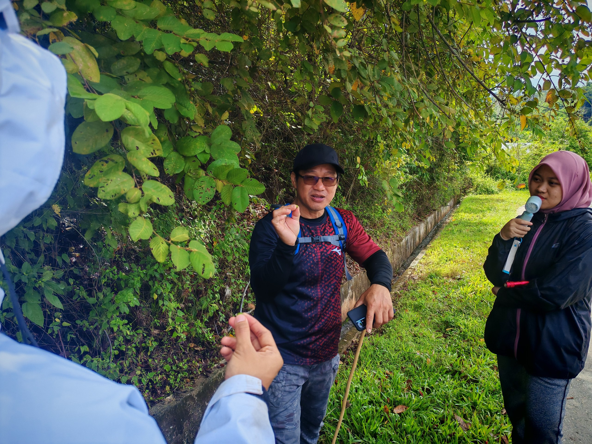
By establishing a professional digital presence, Chanang Hill gains significantly higher visibility among the hiking community. This increased foot traffic directly stimulates the local economy, creating a rising demand for experienced local guides and providing sustainable income opportunities for the Keningau community.

The platform promotes indigenous crafts and local enterprises throughout the Bingkor area, providing direct income to community artisans. By digitizing traditional products like the hand-woven Takiding, it preserves indigenous craftsmanship while opening new global market channels.
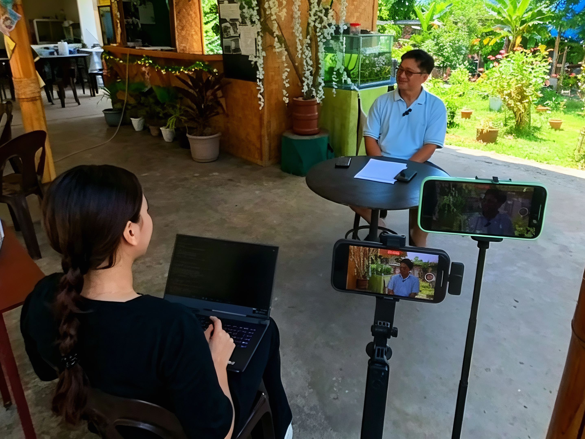
This project didn't just build a product for the community — it built capacity within the community. The local management team gained hands-on experience operating a modern web platform, managing dashboards, and interacting with AI integration. This approach demystified technology and transferred crucial digital literacy skills.
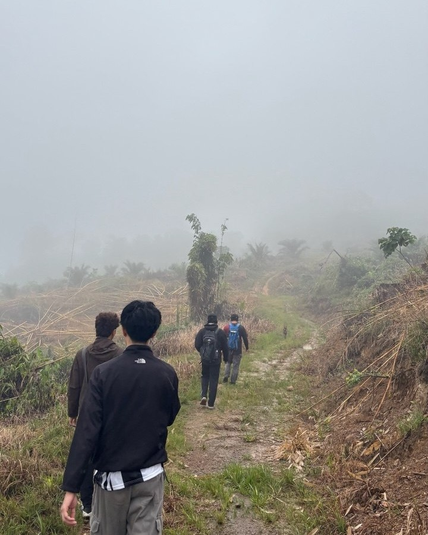
The digital infrastructure we've built lays the groundwork for future trail running events that could drive seasonal revenue for local homestays, food vendors, and transport operators. With sponsorship and community support, Chanang Hill has the potential to become a recognized trail running destination, creating an annual economic cycle for the community.
This project directly contributes to four UN Sustainable Development Goals
Creating employment and income opportunities for local guides and artisans through digital tourism infrastructure.
Making Keningau's natural heritage accessible and sustainable through responsible digital tourism management.
Promoting sustainable tourism practices that respect the environment and benefit local communities directly.
Raising awareness of Chanang Hill's biodiversity and encouraging conservation through education on the platform.
A visual retrospective of the project's journey, from technical mapping to community empowerment.
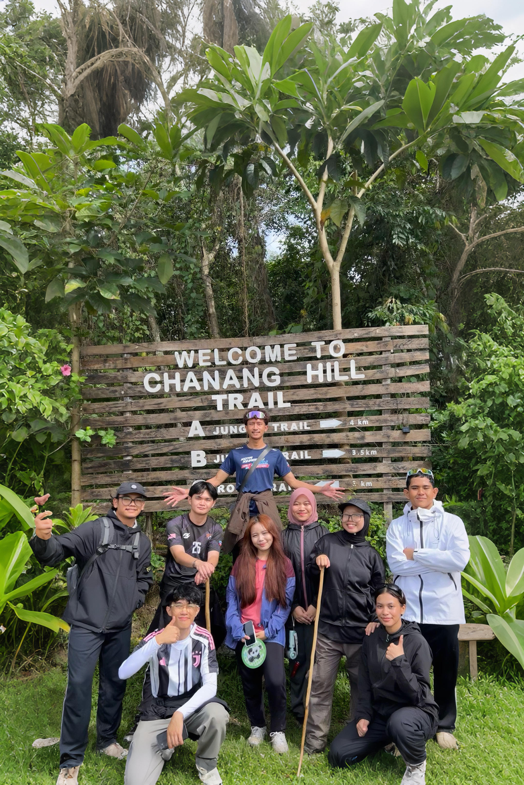
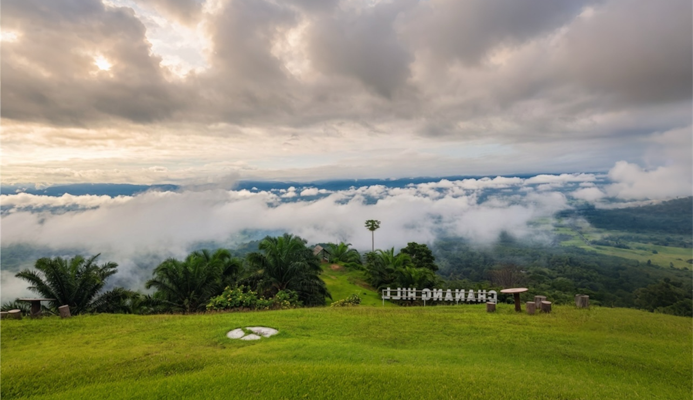
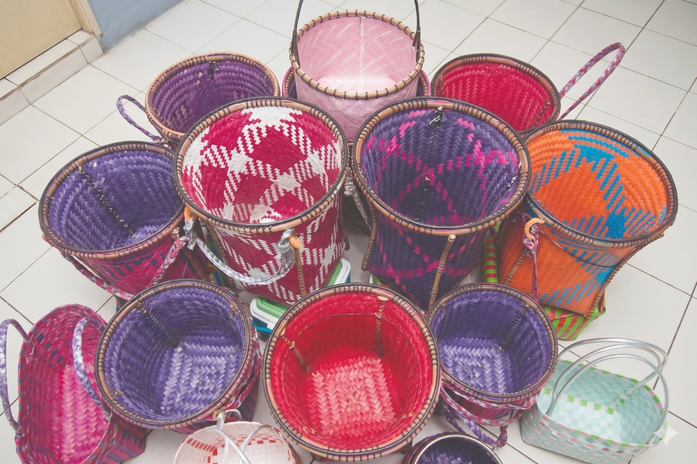
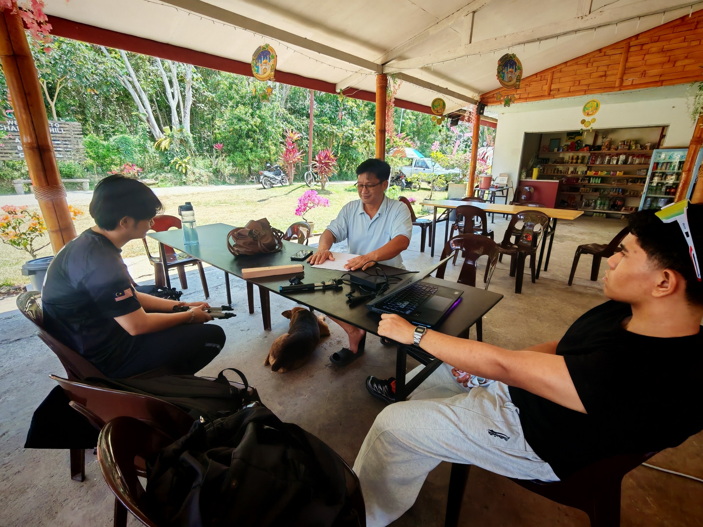

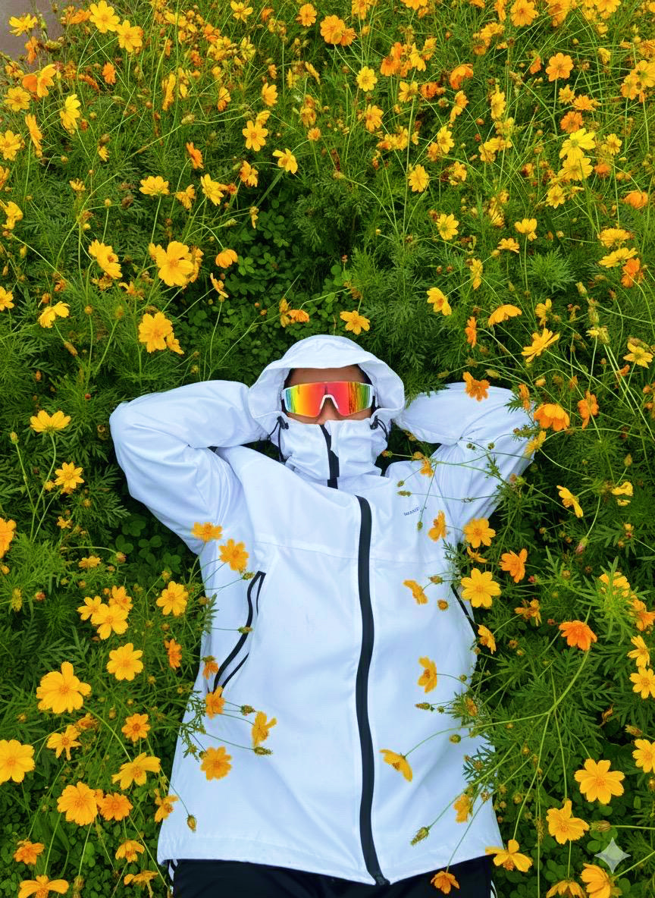
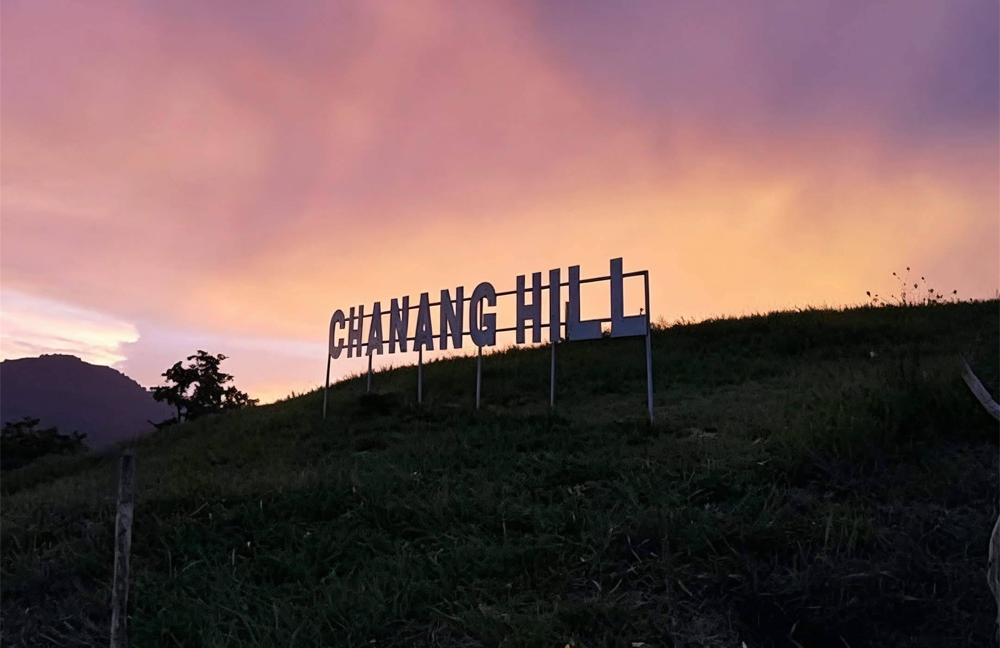
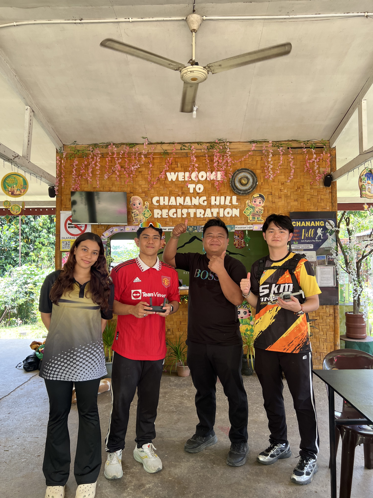
Beyond the pilot, we are building a generational vision to safeguard the biological integrity and cultural heritage of Chanang Hill.
A definitive long-term reforestation initiative dedicated to preserving the biological integrity
of the Crocker Range. This pillar prioritizes the establishment of native seedling banks and
zero-waste operational protocols to safeguard endemic wildlife habitats.
Central to this
vision is the 'Plant-as-you-Hike' program, allowing
visitors to sponsor and personally plant native seedlings in designated restoration zones along
Trail B and C, ensuring a lasting environmental legacy.
The integration of cutting-edge technology to redefine sustainable tourism and trail safety.
This framework utilizes WebAR-driven navigation,
interactive digital education markers, and real-time IoT environmental monitoring.
These
innovations provide a more secure, data-informed, and immersive exploration of the Borneo
rainforest while minimizing human impact on sensitive ecological zones.
A localized economic engine designed to build a direct bridge between global tourism and the
artisan heritage of Bingkor. This hub facilitates the incubation of youth-led
eco-startups, ranging from organic local provisions to digital storytelling, while providing a
dedicated platform for master weavers to showcase traditional crafts such as the Takiding.
This model ensures community-wide
prosperity
and the preservation of indigenous skills for future generations.
Experience the digital transformation of Chanang Hill. Explore the platform built to empower local guides and connect communities.